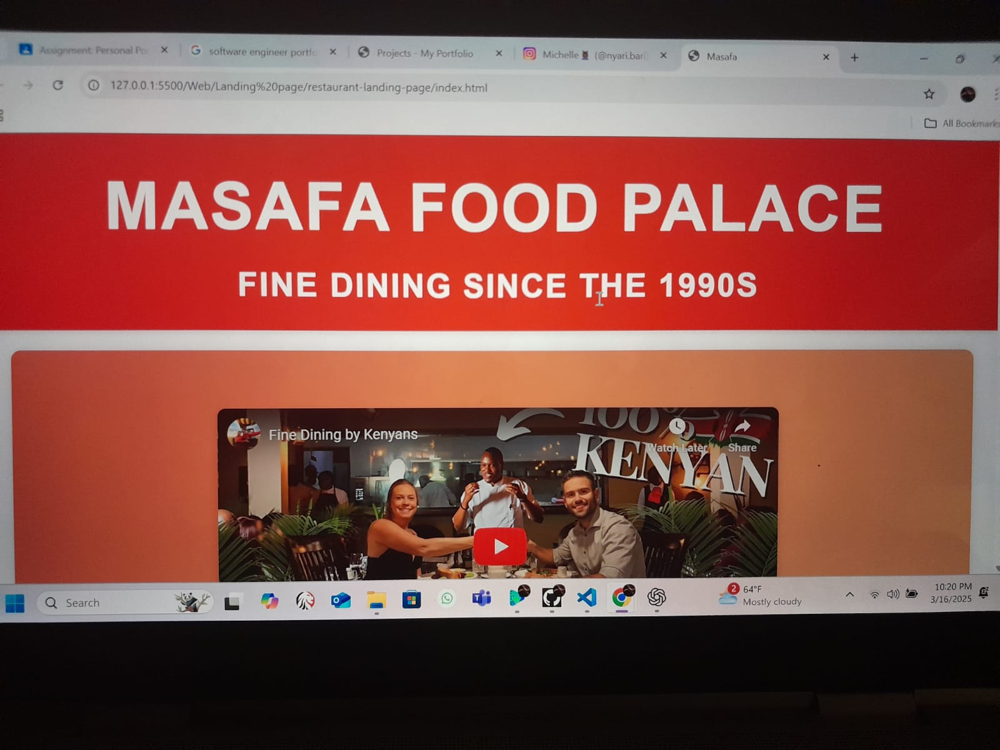
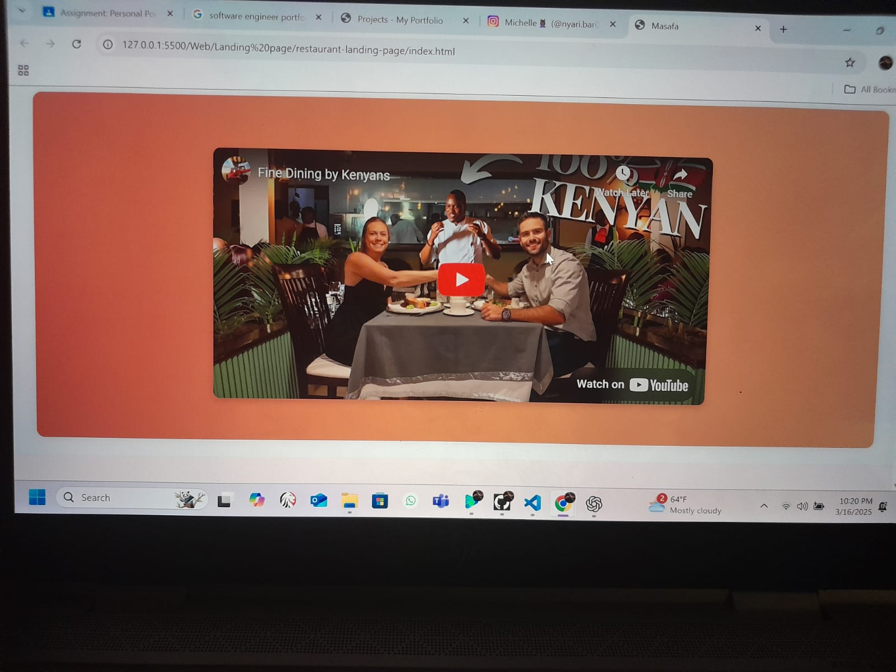
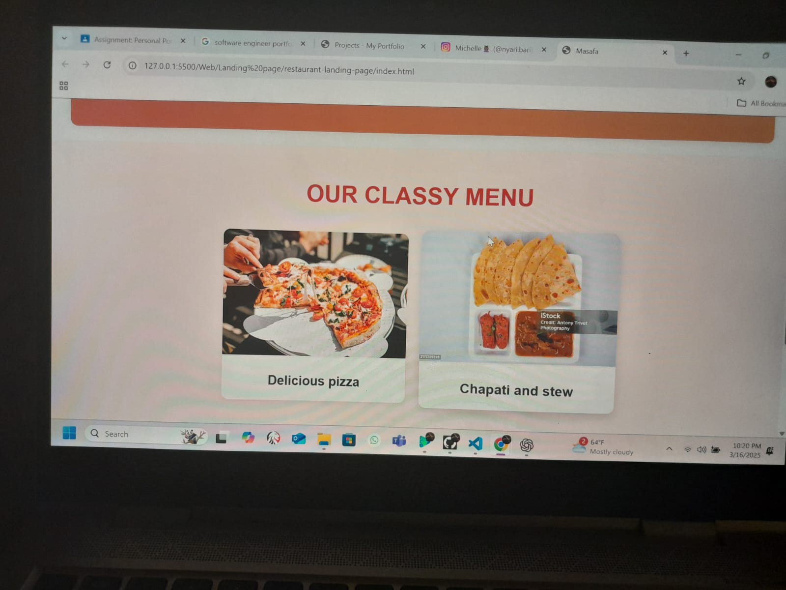
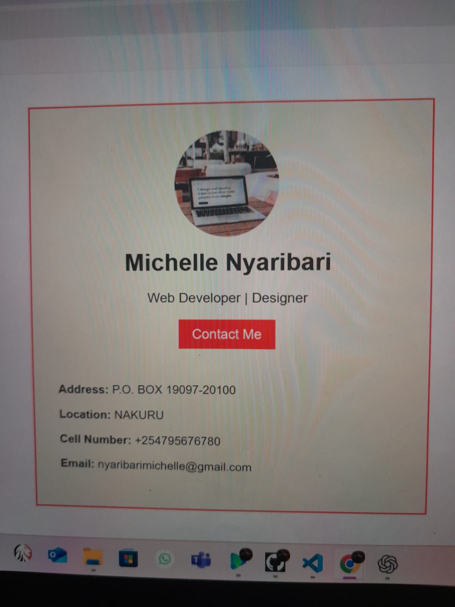

My projects
Project 1
This is a simple web application of a restaurant landing page.
  The website is for a restaurant called Masafa Food Palace. This is my first Project in which i learnt everything about web development. I was mostly captivated by the development of this website and hence I chose to specialise in Web development and design.
Project 2
This project is of my personal profile card as a Web developer and designer.
In order to launch one's career as a Software Engineer, one way to start is by creating a profile card. It is important as it is used to obtain one's clients. Therfore, I made it possible for people to access my services in Web development and design by posting my detils on the internet. Through my profile card, potential clients find a way to contact me.
Project 3
This is a personal portfolio of myself as an upcoming Software Engineer.


As I grow as a Software Engineer, so does my experience and projects. the personal portfolio was meant to showcase my ability in my career in order to buid trust among my clients. The portfolio contains my details, my projects as well as my contacts.